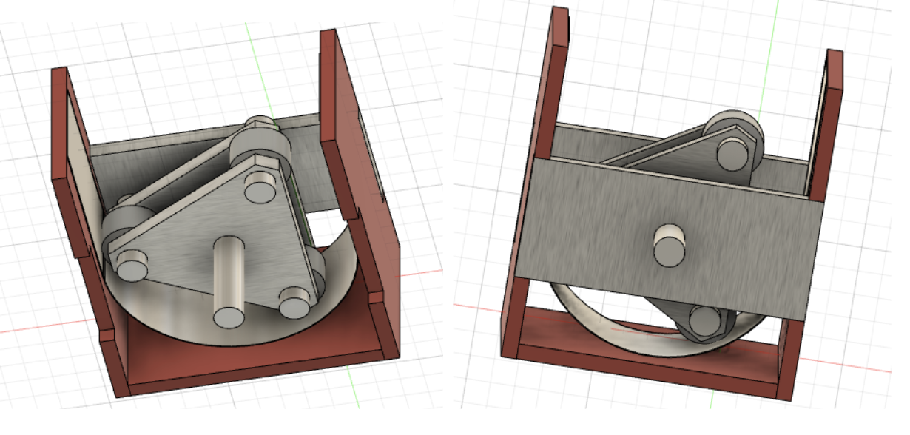

A render of the final peristaltic water pump design.
The goal of this project was to build a pump that could pump as much water as possible within a set time frame. My three other teammates and I explored 4 different types of pumps to build—a piston pump, diaphragm pump, peristaltic pump, and gear pump. Ultimately, from a ease of design perspective, we decided to pursue the peristaltic pump design. However, we also wanted to add our own special twist to a standard peristaltic design.

We first designed a basic peristaltic pump by creating a basic bill of materials, to get a feel for how much room for spending we had and how much we could improve upon a basic design while staying within budgeting constraints. This design consisted of a rotor made out of CNC machined triangular plates with rollers at the vertices. These rollers interfaced with a singular tube (not shown in the CAD) that sat between the rotor and a curved sheet metal plate. The sheet metal plate allows for the tube to be squeezed by the rollers. Finally, the whole assembly is enclosed within acrylic lasercut walls.
We wanted to move beyond this basic design by adding a mechanical feature to our pump that would improve our pump capability. We came up with a design that modified the rotor, so that the rotors were not fixed but could move axially against a wedge on a spring. Our idea was that the springs would push the rollers against the tube with enough force to pump the water while minimizing friction at the same time. To the right are the CNC manufacturing drawings.
The top drawing shows the triangular rotor with grooves at the vertices that allow the rollers to move axially. Holes are also drilled into the rotor towards the central axis at the vertices to allow for insertion of the springs and the wedge. The bottom drawing shows the wedge that will be welded to the springs. The wedges push against the rollers, providing force to the pump.